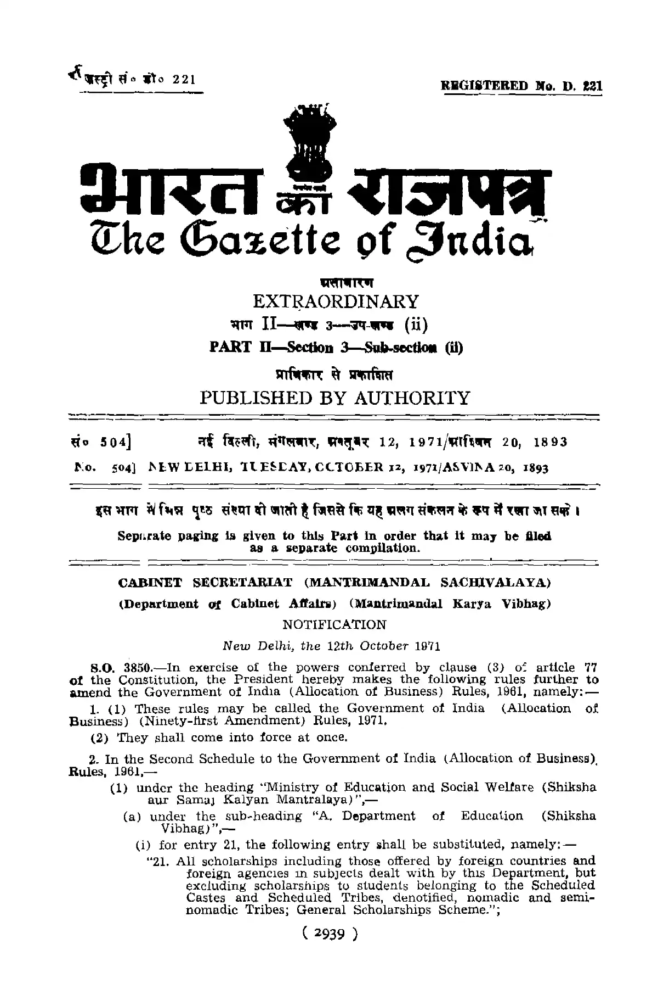
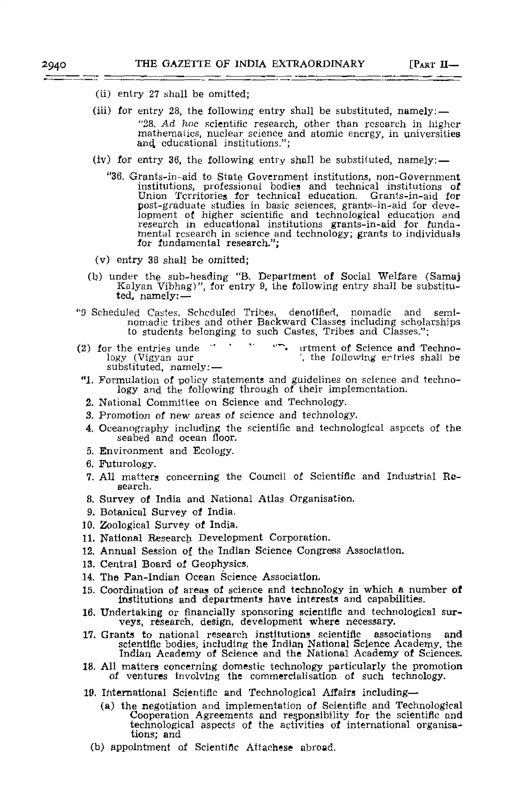
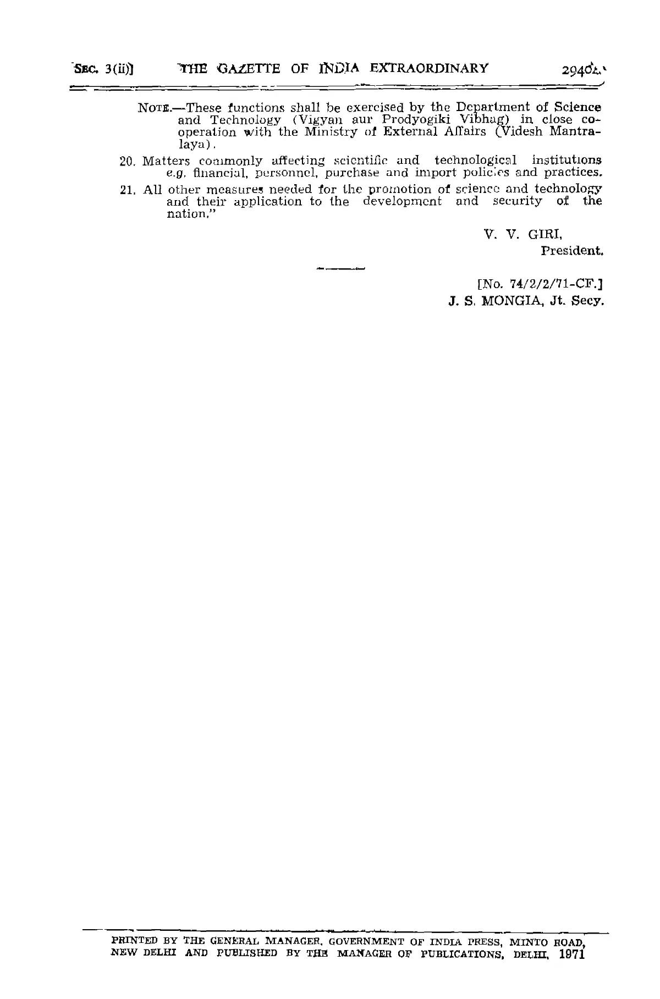

Amendment #91 (S.O. 3850, 1971)
7 changes: 0 to the First Schedule, 7 to the Second Schedule. 7 applied
What it did to the ministries
- grewDepartment of Science and Technology grows from 9 to 21 subjects change 7 · histories: Science and Technology
The order, page by page
Page 1 of 4

1Schedule 2 › Ministry of Education and Social Welfare › Department of Education › entry 21
- 21. All scholarships including those offered by foreign countries and foreign agencies in subjects dealt with by this Department, but excluding scholarships to students belonging to the Scheduled Castes and Scheduled Tribes, denotified, nomadic and seminomadic Tribes; General Scholarships Scheme.
applied at schedule 2 › ministry MINISTRY OF EDUCATION AND SOCIAL WELFARE › department A › entry 21 in the Rules after #91
Page 2 of 4

234567Schedule 2 › Ministry of Education and Social Welfare › Department of Education › entry 27
applied at schedule 2 › ministry MINISTRY OF EDUCATION AND SOCIAL WELFARE › department A › entry 27 in the Rules after #91
Schedule 2 › Ministry of Education and Social Welfare › Department of Education › entry 28
- 28. Ad hoc scientific research, other than research in higher mathematics, nuclear science and atomic energy, in universities and educational institutions.
applied at schedule 2 › ministry MINISTRY OF EDUCATION AND SOCIAL WELFARE › department A › entry 28 in the Rules after #91
Schedule 2 › Ministry of Education and Social Welfare › Department of Education › entry 36
- 36. Grants-in-aid to State Government institutions, non-Government institutions, professional bodies and technical institutions of Union Territories for technical education. Grants-in-aid for post-graduate studies in basic sciences, grants-in-aid for development of higher scientific and technological…
applied at schedule 2 › ministry MINISTRY OF EDUCATION AND SOCIAL WELFARE › department A › entry 36 in the Rules after #91
Schedule 2 › Ministry of Education and Social Welfare › Department of Education › entry 38
applied at schedule 2 › ministry MINISTRY OF EDUCATION AND SOCIAL WELFARE › department A › entry 38 in the Rules after #91
Schedule 2 › Ministry of Education and Social Welfare › Department of Social Welfare › entry 9
- 9 Scheduled Castes, Scheduled Tribes, denotified, nomadic and seminomadic tribes and other Backward Classes including scholarships to students belonging to such Castes, Tribes and Classes.
applied at schedule 2 › ministry MINISTRY OF EDUCATION AND SOCIAL WELFARE › department B › entry 9 in the Rules after #91
Schedule 2 › Department of Science and Technology
- 1. Formulation of policy statements and guidelines on science and technology and the following through of their implementation.
- 2. National Committee on Science and Technology.
- 3. Promotion of new areas of science and technology.
- 4. Oceanography including the scientific and technological aspects of the seabed and ocean floor.
- 5. Environment and Ecology.
- 6. Futurology.
and 18 more
- 7. All matters concerning the Council of Scientific and Industrial Research.
- 8. Survey of India and National Atlas Organisation.
- 9. Botanical Survey of India.
- 10. Zoological Survey of India.
- 11. National Research Development Corporation
- 12. Annual Session of the Indian Science Congress Association.
- 13. Central Board of Geophysics.
- 14. The Pan-Indian Ocean Science Association.
- 15. Coordination of areas of science and technology in which a number of institutions and departments have interests and capabilities.
- 16. Undertaking or financially sponsoring scientific and technological surveys, research, design, development where necessary.
- 17. Grants to national research institutions scientific associations and scientific bodies, including the Indian National Science Academy, the Indian Academy of Science and the National Academy of Sciences.
- 18. All matters concerning domestic technology particularly the promotion of ventures involving the commercialisation of such technology.
- 19. International Scientific and Technological Affairs including—
- a. the negotiation and implementation of Scientific and Technological Cooperation Agreements and responsibility for the scientific and technological aspects of the activities of international organisations; and
- b. appointment of Scientific Attachese abroad. SEC. 3 (II))
- NOTE.—These functions shall be exercised by the Department of Science and Technology (Vigyan aur Prodyogiki Vibhag) in close cooperation with the Ministry of External Affairs (Videsh Mantralaya).
- 20. Matters commonly affecting scientific and technological institutions e.g. financial, personnel, purchase and import policies and practices.
- 21. All other measures needed for the promotion of science and technology and their application to the development and security of the nation
applied at schedule 2 › department DEPARTMENT OF SCIENCE AND TECHNOLOGY in the Rules after #91
read page break
Page 3 of 4

Page 4 of 4

How this document was read
Edits to the reading
| Date | By | Edit | Before → after |
|---|---|---|---|
| 12 November 2026 | claude | word corrected | |
| 12 November 2026 | claude | word corrected |
From the Government of India (Allocation of Business) Rules, 1961 and their amendments, as published by the Cabinet Secretariat (cabsec.gov.in), read by orgpedia. The readings of the older scanned gazettes have known gaps.